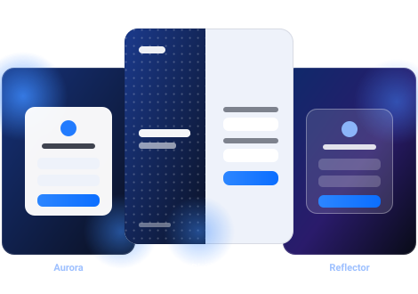
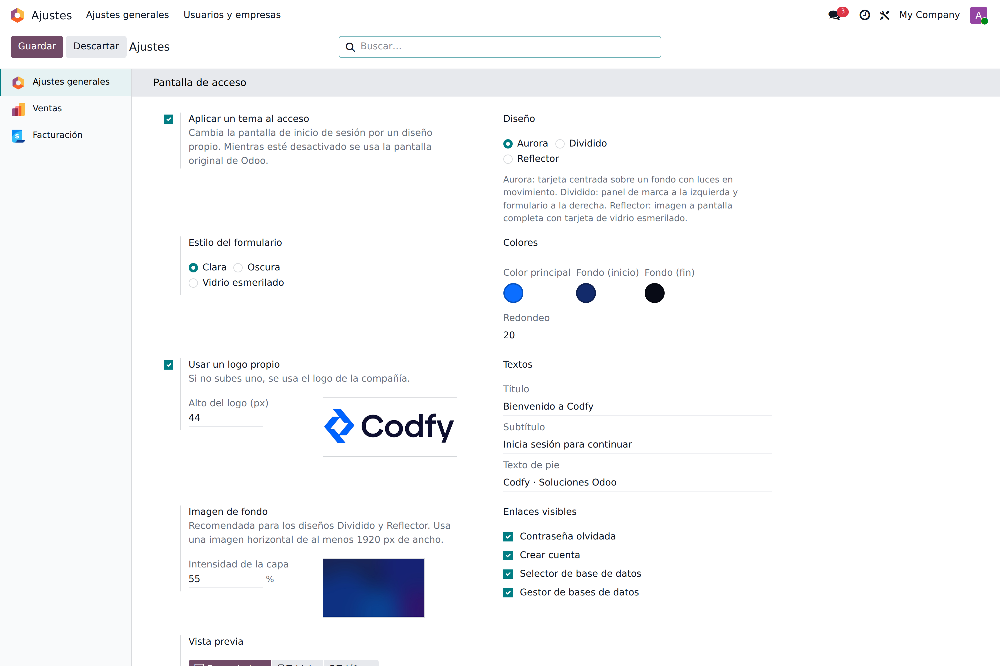
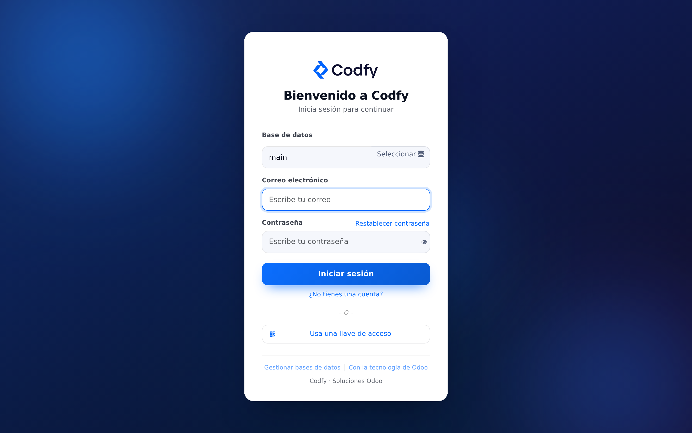
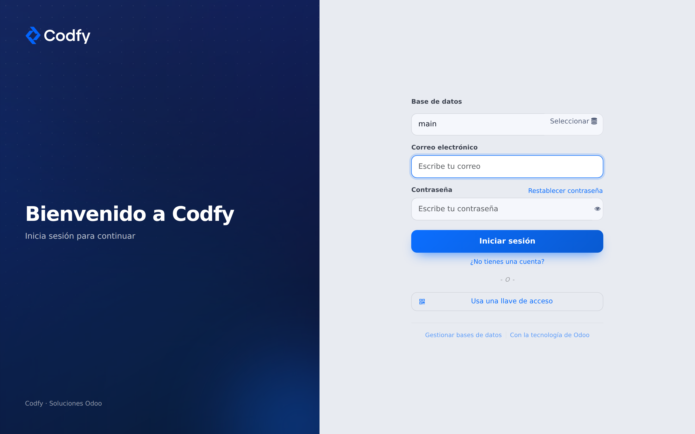
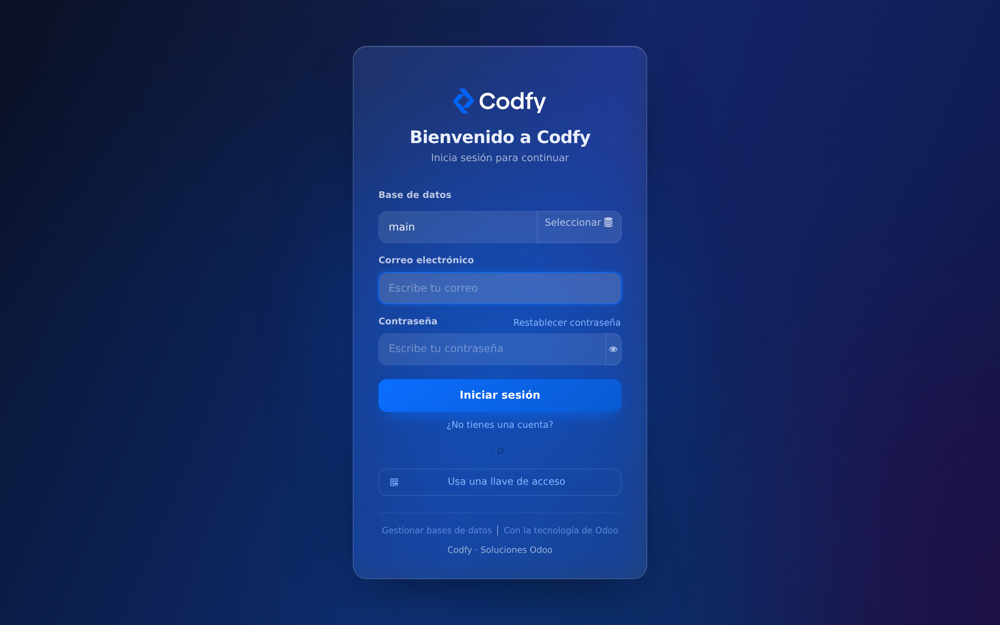
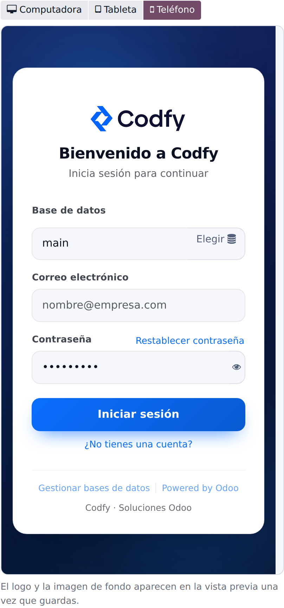
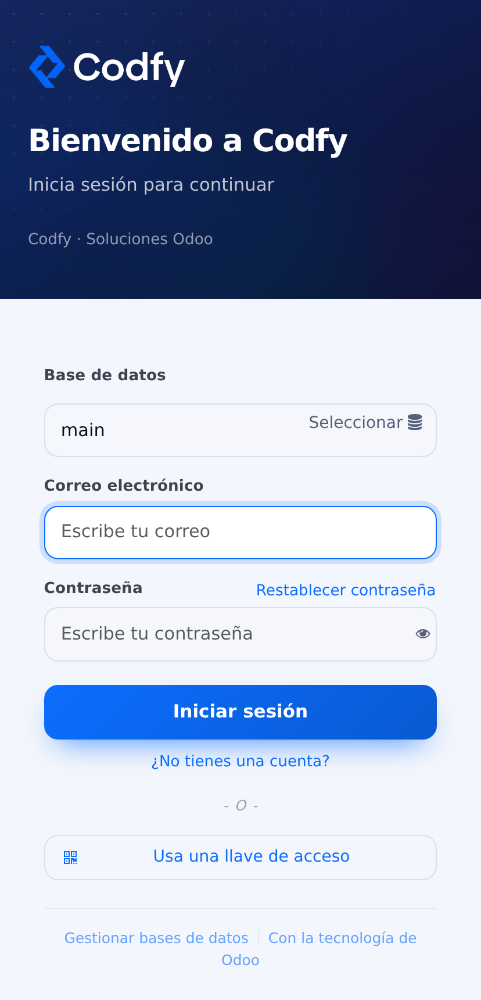
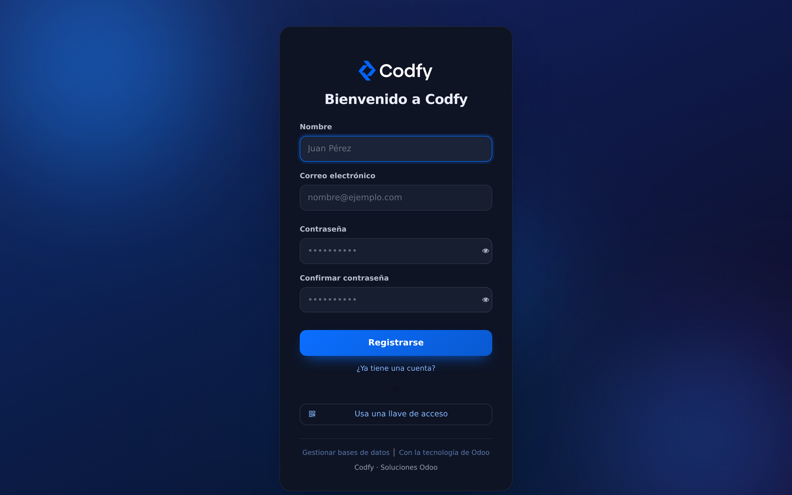

Pantalla de acceso · Community y Enterprise
La pantalla de inicio de sesión es lo primero que ve tu equipo y tus clientes cada día, y en Odoo es siempre la misma. Con este módulo eliges entre tres diseños modernos, pones tus colores, tu logo y tus textos, y ves el resultado en vivo mientras lo configuras. Sin programar y sin instalar un tema completo.

Todos los Odoo del mundo se ven igual al entrar. Si tu empresa cuida su imagen, o si das acceso a clientes y proveedores por el portal, esa primera pantalla dice mucho. Cambiarla normalmente significa tocar plantillas QWeb o instalar un tema completo que se mete con todo el backend. Este módulo hace solo una cosa, y bien: deja la pantalla de acceso a tu gusto desde Ajustes, sin tocar código y sin efectos secundarios en el resto de Odoo.
Aurora, Dividido y Reflector. Cada uno es una estructura distinta, no el mismo diseño con otro color. Cambias de uno a otro con un clic.
Color principal, degradado de fondo y redondeo. El botón, los enlaces y el foco de los campos toman tu color, y el texto ajusta su contraste solo.
Sube tu logo (o usa el de la compañía), escribe el título, el subtítulo y el pie, y pon una imagen de fondo con la intensidad de capa que quieras.
Dentro de Ajustes ves la pantalla real mientras eliges, sin guardar y sin abrir otra pestaña. Puedes verla como computadora, tableta o teléfono.
Los tres diseños son responsivos. En el teléfono, el panel lateral del diseño Dividido se convierte en una banda superior y el formulario queda completo debajo.
El mismo diseño se aplica a iniciar sesión, crear cuenta y restablecer contraseña. Y decides qué enlaces se muestran en cada una.
Cada diseño cambia la estructura de la pantalla. Encima de cualquiera de los tres puedes elegir el estilo del formulario: claro, oscuro o vidrio esmerilado. En el Manual de usuario los ves en capturas reales.
| Diseño | Cómo se ve |
| Aurora | Formulario centrado sobre un fondo con luces de color que se mueven muy despacio. El más sobrio y el que mejor funciona sin imagen. |
| Dividido | Panel de marca a la izquierda con tu logo y tu mensaje, formulario a la derecha. Es el que más presencia de marca da. |
| Reflector | Tu imagen a pantalla completa con una tarjeta de vidrio esmerilado encima. Ideal si tienes una buena foto de tu empresa o tu producto. |
¿Quieres ver cómo se configura, pantalla por pantalla? Abre la pestaña Manual de usuario arriba.
Funciona en Odoo 19, tanto en Community como en Enterprise. No depende de ningún módulo Enterprise ni de módulos de terceros: solo de web y base_setup, que ya tienes. No modifica las vistas del backend ni los menús; solo añade su bloque en Ajustes y viste la pantalla de acceso. Se desactiva con un clic y la pantalla vuelve a ser la original de Odoo. Licencia LGPL-3.
1. Qué hace el módulo
2. Instalación
3. Activar el tema y elegir diseño
4. Los tres diseños en pantalla
5. Logo, textos e imagen de fondo
6. Qué enlaces se muestran
7. Vista previa y teléfono
8. Preguntas frecuentes
Sustituye el aspecto de la pantalla de inicio de sesión de Odoo por uno de tres diseños, con los colores, el logo y los textos que elijas. Todo se configura desde Ajustes, en el bloque Pantalla de acceso. El formulario en sí no cambia: siguen siendo los campos, los botones y la seguridad de Odoo, solo que vestidos con tu marca. Por eso conviven sin problema los inicios de sesión por contraseña, por llave de acceso o por proveedor externo.
Mientras la casilla Aplicar el tema esté desactivada, Odoo muestra su pantalla de siempre. Puedes probar sin compromiso: activar, mirar y desactivar.
Entra en Aplicaciones, busca Temas de Login e instala. No agrega menús nuevos ni pide configuración previa. Al terminar, ve a Ajustes → Ajustes generales y baja hasta el bloque Pantalla de acceso.
Marca Aplicar el tema y aparecerá el resto de opciones. Elige uno de los tres diseños y el estilo del formulario (claro, oscuro o vidrio esmerilado); al cambiar de diseño se propone el estilo que mejor le queda, y tú puedes cambiarlo después. Ajusta el color principal, el degradado de fondo y el redondeo, y pulsa Guardar.

Todas las opciones del tema viven en un solo bloque de Ajustes, con la vista previa al final.
Formulario centrado sobre un fondo con luces del color de tu marca que se desplazan muy lentamente. Es el diseño más neutro y el que mejor se ve sin imagen de fondo. Si el usuario tiene activado el ahorro de movimiento en su sistema, las luces se quedan quietas.

Un panel de marca ocupa un lado de la pantalla con tu logo, tu título y tu mensaje; el formulario queda limpio al otro lado. Es el que más presencia de marca da y el que mejor funciona con una frase corta de bienvenida.

Tu imagen ocupa toda la pantalla y el formulario aparece dentro de una tarjeta de vidrio esmerilado. La intensidad de la capa decide cuánto se oscurece la imagen para que el texto se siga leyendo bien.

| Opción | Para qué sirve |
| Usar un logo propio | Sube el logo que quieras ver en el acceso. Si no lo activas, se usa el de la compañía. Con Alto del logo ajustas su tamaño. |
| Título | El texto grande de bienvenida. Aparece también en las pantallas de registro y de contraseña. |
| Subtítulo | La frase de apoyo bajo el título. Solo se muestra al iniciar sesión, para que no diga “inicia sesión” en la pantalla de registro. |
| Texto de pie | Una línea al final, para el nombre de la empresa o un aviso interno. |
| Imagen de fondo | La foto de fondo. Usa una imagen horizontal de al menos 1920 px de ancho y regula la intensidad de la capa hasta que el texto se lea cómodo. |
Un consejo sobre el logo: en los diseños Dividido y Reflector el logo se ve sobre un fondo oscuro. Si tu logo es de color oscuro, sube la versión en blanco de tu marca; se leerá mucho mejor.
En Enlaces visibles decides qué ve el usuario en la pantalla de acceso. Es útil para instalaciones internas, donde no quieres que nadie se registre solo ni llegue al gestor de bases de datos:
Ocultar un enlace es un cambio visual: si necesitas cerrar de verdad el registro o el gestor de bases de datos, configúralo también en tu servidor.
Al final del bloque de Ajustes tienes la vista previa. Refleja lo que estás eligiendo sin necesidad de guardar, así que puedes probar colores y textos hasta dar con el que te gusta. Con los botones de arriba la ves como computadora, tableta o teléfono.

El logo y la imagen de fondo aparecen en la vista previa una vez que guardas; el resto se actualiza al momento.
Así se ve el diseño Dividido en un teléfono: el panel de marca pasa a ser una banda superior y el formulario queda completo debajo, sin que nada se recorte.

El tema no se queda en el inicio de sesión: crear cuenta y restablecer contraseña usan el mismo diseño, con el mismo logo y los mismos colores. Quien entra desde el portal no se encuentra con un salto de una pantalla cuidada a otra genérica.

¿Cambia algo del backend de Odoo?
No. Solo la pantalla de acceso, la de registro y la de contraseña. El resto de Odoo queda igual.
¿Funciona en Odoo Community?
Sí. Solo depende de módulos base (web y base_setup) y su licencia es LGPL-3.
¿Puedo poner un tema distinto por compañía?
No. Cuando alguien está en la pantalla de acceso, Odoo todavía no sabe a qué compañía va a entrar, así que el tema es uno solo para toda la instalación.
¿Se puede quitar el aviso de Odoo del pie?
No, y es a propósito. Sí puedes añadir tu propio texto de pie junto a él.
¿Y si me arrepiento?
Desactiva la casilla Aplicar el tema y vuelve la pantalla original de Odoo. Si desinstalas el módulo, no queda rastro.
¿Afecta a la velocidad de carga?
No. Los estilos viajan en los recursos que Odoo ya carga y el tema solo añade una consulta a la base de datos al pintar la pantalla.
Puesta en marcha de Odoo a la medida de tu operación, de la configuración al arranque.
Módulos y personalizaciones específicas para automatizar lo que tu negocio necesita.
Configuración fiscal y contable alineada a la normativa mexicana (CFDI, SAT y conciliación).
Formamos a tu equipo para que aproveche Odoo al máximo desde el primer día.
Implementación, desarrollo y consultoría Odoo en México.